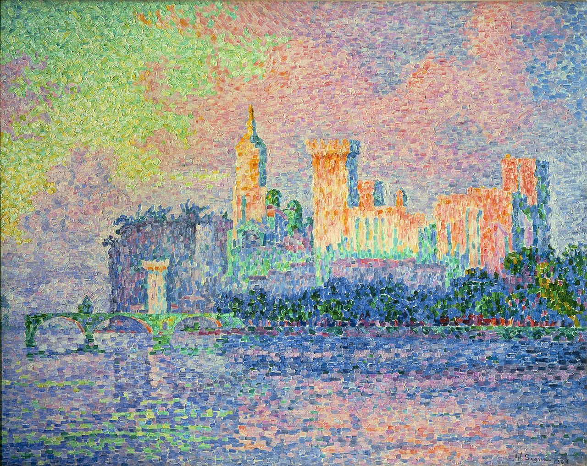

Krajobrazy Rilkego
Awinion
Ostatnio przebywałem w Prowansji, w Awinionie, była to jedna z moich najciekawszych podróży. Niemal codziennie przez siedemnaście dni oglądałem olbrzymi pałac papieski, tę hermetycznie zamkniętą twierdzę, w której papiestwo, stojąc w obliczu upadku, próbowało się okopać, zapiekłe w swojej ostatniej wielkiej namiętności. Ilekroć się ogląda ów gmach, co był siedliskiem rozpaczy, wydaje się, że stoi on na skale nieprawdopodobieństwa…
— Rilke w liście do Lou Andreas-Salomé (przeł. W. Markowska)
Paul Signac „Le château des Papes, Avignon”, 1909